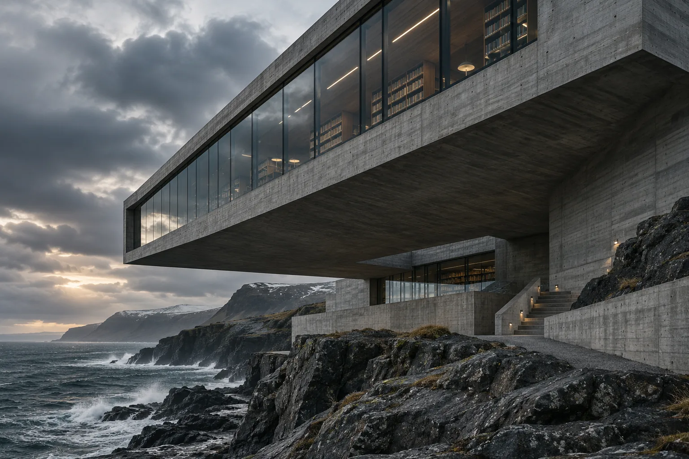
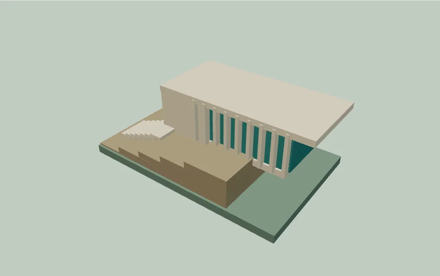

Architecture practice
A roomfor the sea
A reading room on a hard edge of coast. The roof begins at the road and ends above the water.
Explore the section
From road to water
The building uses the existing fall of the rock. A single public route runs through three different conditions of light.
Arrival at road level
A low ceiling narrows the field of view before the first glimpse of the sea.
Plan scale calculator
Measure a rectangular room on a printed plan to find its actual dimensions and area.
3D model
Coastal library massing
